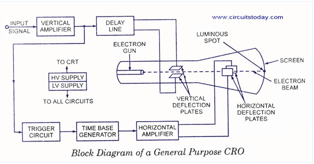

Shakshat Virtual Lab 
INDIAN INSTITUTE OF TECHNOLOGY GUWAHATI
Analog to Digital Conversion:
Digital controllers have many advantages, including increased flexibility and ease of change to the control program, the logic capabilities of digital systems that allow the implementation of complex algorithm and the immunity to drift faced by electronic components in analog control. Most of the signals that appear in the industry are analog (Temp, pressure, etc). Hence, these signals need to be converted to digital signals to be used by the digital controller feedback loop. The control signal produced by the digital controller needs also to be converted back to analog to drive the plant being controlled. This experiment covers the details of analog to digital conversion of numbers.

Following are ADC generally used.
1. Counter Type ADC.
2. Successive Approximation Type.
3. Flash Type.
The output of an A/D converter depends on the following:
1. CRT
* Low and high reference voltages VRL and VRH (If VRL and VRH have the same polarity, the A/D is a unipolar device; otherwise it is bipolar).
* The number of bits k, the signal is coded into
A k-bit A/D generates 2k output levels called quanta. The minimum value is called offset, and the difference between the minimum and the maximum is called the range, span or full scale. Example, for an 8-bit code, VRL
will be eight zeros, VRH will be eight ones and the number of levels is 28 = 256.
The resolution VQ is the smallest variation in the analog input signal that would cause the A/D output code to change by one level or quantum.

Any voltage level vi within the input signal range is translated to its decimal equivalent as

Where:

Analog values within a quantum level generate the same output code. The maximum error is ±½LSB (Least Significant Bit). The error VE between the digitized voltage and the input voltage is estimated by:

The error can be lowered by increasing the number of output bits of the converter. Aliasing is the misrepresentation of a high frequency signal as a low frequency one. This might happen when we use an ADC as shown in the figure below.
C
Digital to Analog conversion :
It is uesd to convert digital input to analog output.

Output voltage is directly proportional to digital input. The output analog equivalent voltage Vo of a k-bit unipolar DAC is calculated as such:


The minimum number of bits required in the DAC for specified resolution Vq and desired range is:

The result should be truncated to the next highest integer value.